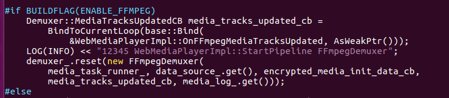
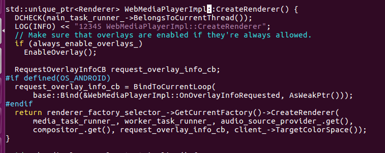

B002：media--part1
media模块大量参考老罗的博客：https://blog.csdn.net/Luoshengyang/。
媒体播放是浏览器一个重要的功能，媒体的模块的基础设施如下图：
1、HTMLMediaElement是w3c标准video/audio标签的具体实现,HTMLMediaElement有两个子类，HTMLVideoElement和HTMLAudioElement，分别为video、audio。每一个<video>/<audio>创建一个HTMLMediaElement节
点。HTMLMediaElement负责穿件mediacontrol和mediaplayer，并且发布js接口(媒体专有js接口可以在HTMLMediaElement.idl文件中查看)。
2、MediaControl包含若干video/audio的内置元素，负责和用户交互。Mediacontrol的元素都是继承与HTMLDivElement，video的播放按钮，进度条等都是一个个按照规律排放的div块。了解Mediacontrol可以定制播放界面，
目前市场常用的浏览器比如qq，uc都定制了自己的播放器UI。mediacontrol的样式在：legacyMediaControls.css和modernMediaControls.css中，本想给每个按钮加个背景色，以显示整体结构，但是修改之后没有生效(63版本直接生效，现
在70版本了，不知道做了什么修改)。下图是css加载的默认样式，和匹配的所有样式；最后两行是mediacontrolpanel的所有样式，可以看到修改的红色rgb(255,0,0）参与了样式匹配，但是最后的initial不知道是从哪里读取的。
mediacontrol模块相对简单，不详细研究记录了。
mediacontrol的结构如下图。笔记本屏幕较小，没有全部截全部，可看media_control_impl.cc。
3、fullscreen是实现全屏功能的模块。video全屏功能是HTMLMediaElement中调用FUllScreen::RequestFullscreen方法实现。视频全屏过程在老罗的博客有详细的介绍。补充一点，全屏过程中的旋转规则：
a、videoWidth > videoHeight，全屏时横屏；
b、videoWidth < videoHeight，全屏时竖屏；
c、videoWidth = videoHeight， 不变。
代码实现逻辑在media_controls_orientation_lock_delegate.cc中。
4、Player,媒体播放播放器。这个是播放的核心，也是最复杂的模块。chromium的方案如下图：
WebMediaPlayerImpl是播放器的管理类，创建播放器会先调用GetCurrentFactory获取当前的RendererFactory,默认情况下，FactoryType是DEFAULT，DEFAULT使用Unified Media Pipeline。如果FactoryType设为
MEDIA_PLAYER，则使用AndroidPlayer。chromium 55版本以后都默认是Unified Media Pipeline，只有当Unified Media Pipeline发生DEMUXER_ERROR_DETECTED_HLS错误时，chromium会fallback到androidplayer。代码在
webmediaplayer_impl.cc、renderer_factory_selector.cc中。
当前UMPipeline的播放能力基本能覆盖主流音视频格式。AndroidmediaPlayer已经基本不再使用，老罗的博客又对androidplayer做了详细介绍，所以本次重点研究对象还是UMPipeline。UMPipeline分成6个部分：DataSource(源)、Demuxer(分离器）
VideoDecoder(视频解码器)、AudioDecoder(音频解码器)、VideoRenderer(视频渲染)、AudioRenderer(音频渲染)。如下图：
1、DataSource：音视频数据。WebMediaPlayerImpl创建的是他的子类：MultibufferDataSource。DataSource通过ResourceLoader获取当前url的视频源。DataSource创建在WebMediaPlayerimpl::DoLoad方法中。
2、Demuxer：音轨和视轨分离。WebMediaPlayerImpl创建的是他的子类：FFmpegDemuxer。创建demuxer_时把DataSource以参数的形式传入。Demuxer创建在WebMediaPlayerimpl::StartPipeline方法中。

3、videorenderer/videodecoder和audiorenderer/audiodecoder：解码和渲染。在上面的结构图中，是decoder和renderer一起创建，WebMediaPlayerimpl调用创建renderer的方法，decoder以参数的方式传入renderer。
(decoderfactory负责创建decoder，rendererfactory负责创建renderer，decoderfactory是rendererfactory的成员变量）。具体代码实现在WebMediaPlayerimpl::CreateRenderer和DefaultRendererFactory::CreateRenderer方法
中。

整体的结构图如下图：
media第一部分就写这么多。当然，基础设施创建完毕，剩下的工作流程更复杂。以后继续研究。